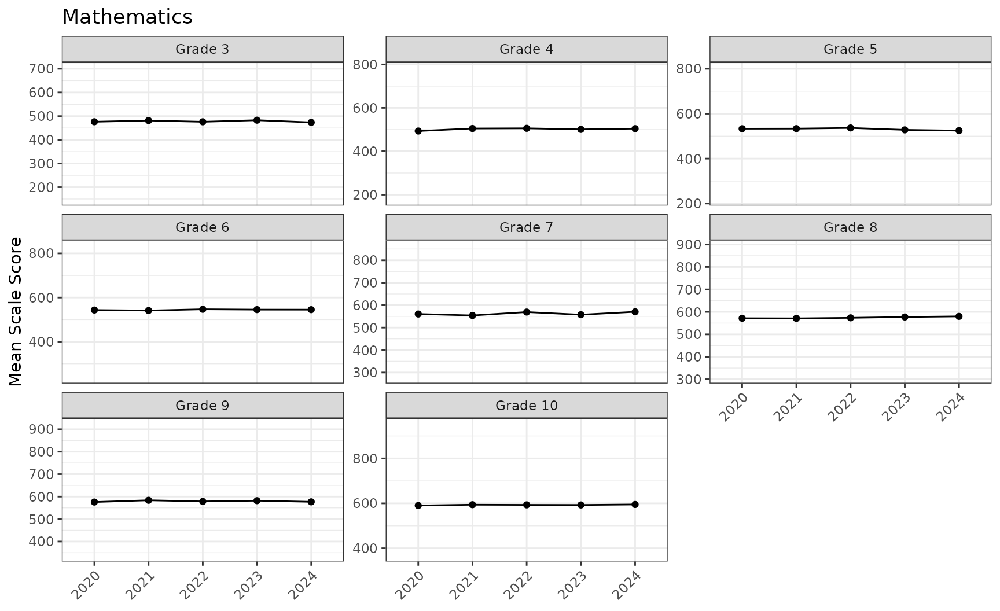
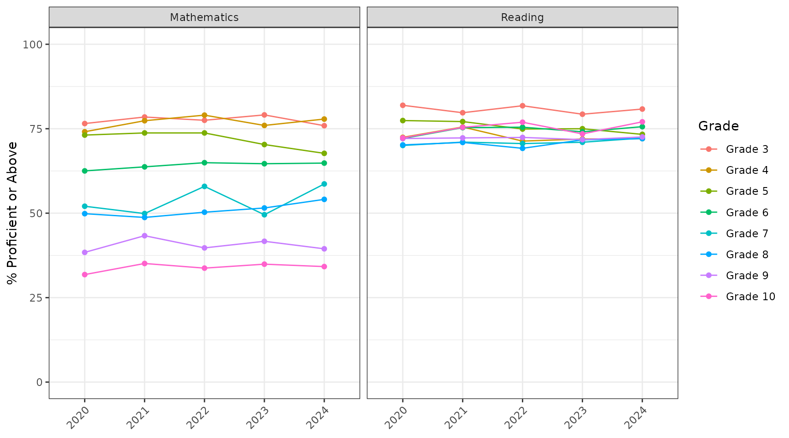
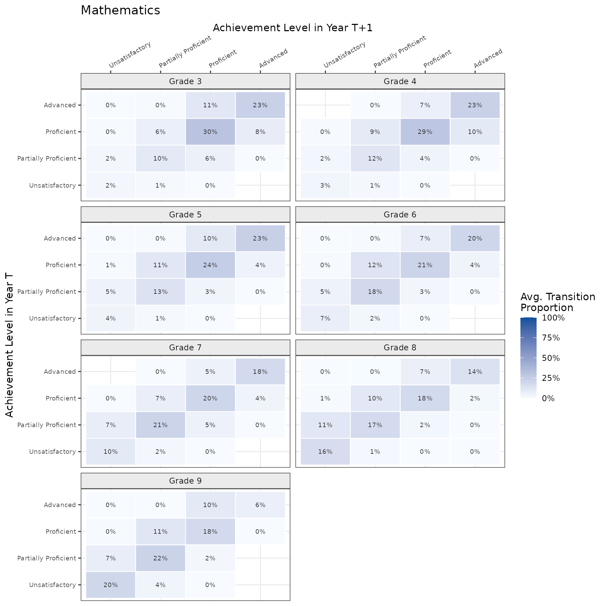
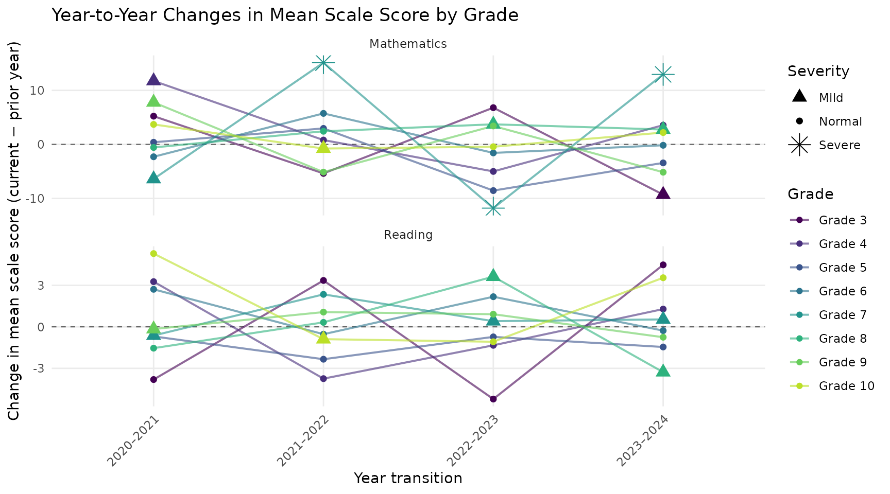
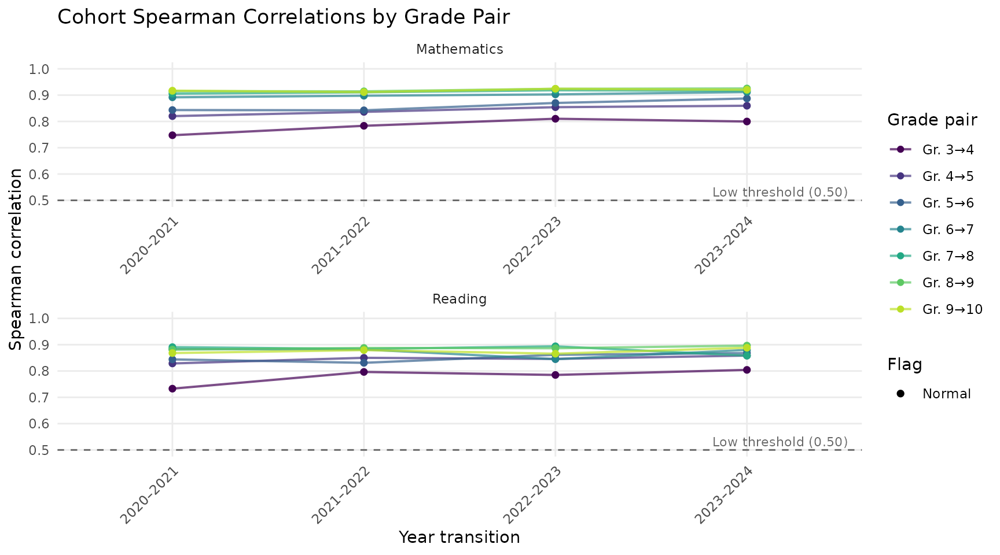
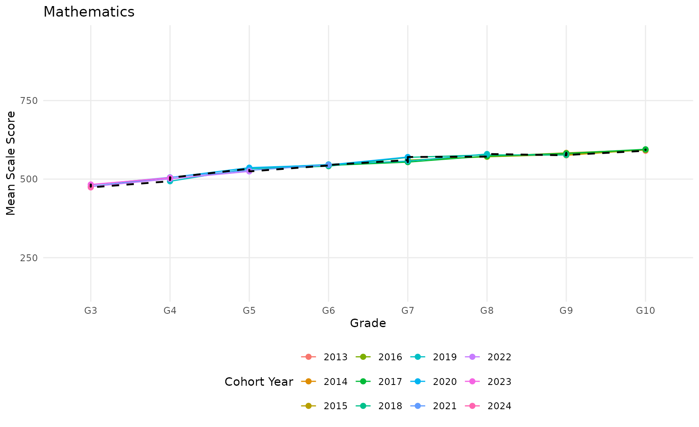

Walkthrough: from student records to a report
Source:vignettes/articles/walkthrough.Rmd
walkthrough.RmdThis walkthrough runs ReportR from start to finish on
sgpData_LONG, a simulated statewide data set from the
SGPdata package. It holds five years (2020–2024) of reading and
mathematics results for grades 3–10, about 366,000 student test records.
Every table, plot, and narrative on this page was produced by the code
shown, and the whole walkthrough runs in about a minute.
You will:
- Prepare the student records
- Describe the assessment
- Run the general trend analysis and look inside the results
- Check score quality
- Run the other lines of analysis
- Save the results and export tables
- Render a report
The last section, Adapting ReportR to your state, lists what changes when you use your own data.
Before you start
Install ReportR from GitHub and the SGPdata package from CRAN:
install.packages(c("devtools", "SGPdata", "openxlsx"))
devtools::install_github("ndadey/ReportR")Then load the packages:
Prepare the student records
Every ReportR analysis reads one data frame,
student_results_long, with one row per student, year, and
subject. Start from the raw records, keep the valid cases, and
standardize the column names:
student_results_long <- sgpData_LONG |>
filter(VALID_CASE == "VALID_CASE") |>
standardize_student_results()standardize_student_results() renames common source
columns to the names ReportR expects. Columns keep their positions, so
comparing names side by side shows what changed:
renamed <- names(sgpData_LONG) != names(student_results_long)
data.frame(
original = names(sgpData_LONG)[renamed],
standardized = names(student_results_long)[renamed]
) |>
knitr::kable()| original | standardized |
|---|---|
| CONTENT_AREA | SUBJECT |
| ID | STUDENT_ID |
| ETHNICITY | RACE_ETHNICITY |
| FREE_REDUCED_LUNCH_STATUS | FRL |
| ELL_STATUS | EL |
| IEP_STATUS | IEP |
| SCHOOL_NUMBER | SCHOOL_ID |
| DISTRICT_NUMBER | DISTRICT_ID |
It also converts academic-year labels to the year the test was given:
unique(sgpData_LONG$YEAR)
#> [1] "2021_2022" "2022_2023" "2023_2024" "2019_2020" "2020_2021"
sort(unique(student_results_long$YEAR))
#> [1] 2020 2021 2022 2023 2024Standardize before filtering by year. Raw SGP-format
data stores years as text such as "2019_2020", so a filter
like YEAR %in% 2022:2024 returns no rows until the years
have been converted.
State-specific cleanup
Every state’s data needs a little cleanup that no general function can anticipate. This data needs two fixes:
- Some records have no scale score (achievement level
"No Score"). They can’t contribute to score analyses, so drop them. - Yes/no flags carry a label prefix, for example
"ELL: Yes"and"IEP: No". School-level percentages countYes,Y,TRUE, or1as “yes”, so strip the prefix. Gender gets the same treatment so its values readFemaleandMale.
student_results_long <- student_results_long |>
filter(!is.na(SCALE_SCORE)) |>
mutate(across(c(FRL, EL, IEP, GENDER), ~ sub("^.*: ", "", .x)))Here are all of one student’s records. The same
STUDENT_ID appears in every year the student was tested,
which is what makes cohort analyses possible:
one_student <- student_results_long$STUDENT_ID[1]
student_results_long |>
filter(STUDENT_ID == one_student) |>
arrange(SUBJECT, YEAR) |>
select(STUDENT_ID, YEAR, SUBJECT, GRADE, SCALE_SCORE,
ACHIEVEMENT_LEVEL, FRL) |>
knitr::kable()| STUDENT_ID | YEAR | SUBJECT | GRADE | SCALE_SCORE | ACHIEVEMENT_LEVEL | FRL |
|---|---|---|---|---|---|---|
| 1000372 | 2022 | MATHEMATICS | 3 | 435 | Proficient | Yes |
| 1000372 | 2023 | MATHEMATICS | 4 | 461 | Proficient | Yes |
| 1000372 | 2024 | MATHEMATICS | 5 | 444 | Partially Proficient | Yes |
| 1000372 | 2022 | READING | 3 | 523 | Partially Proficient | Yes |
| 1000372 | 2023 | READING | 4 | 540 | Partially Proficient | Yes |
| 1000372 | 2024 | READING | 5 | 473 | Unsatisfactory | Yes |
Describe the assessment
Everything specific to an assessment program lives in one R file, the
assessment spec. ReportR ships with a spec for this
demo data. Sourcing it creates a list called
assessment_spec:
source(system.file("specs/00_DEMO_Assessment_Spec.R", package = "ReportR"))
names(assessment_spec)
#> [1] "program" "subjects" "achievement_levels"
#> [4] "scale_scores" "years" "demographics"
#> [7] "notes"The spec names the achievement levels, from lowest to highest, and which level counts as proficient:
assessment_spec$achievement_levels
#> $labels
#> [1] "Unsatisfactory" "Partially Proficient" "Proficient"
#> [4] "Advanced"
#>
#> $policy_benchmark
#> [1] "Proficient"For each subject and grade it records the lowest and highest obtainable scale scores (LOSS and HOSS) and the cut scores between levels:
get_score_spec(assessment_spec, "MATHEMATICS", grade = 5)
#> $loss
#> [1] 220
#>
#> $hoss
#> [1] 800
#>
#> $cuts
#> [1] 421 493 561Each cut is the highest score in the lower level, and a score’s level is the number of cuts it exceeds, plus one. A grade 5 mathematics score of 500 exceeds the first two cuts (421 and 493), so it is level 3: Proficient.
The analysis code never hardcodes any of these values, so the same functions work for a four-level or five-level assessment, and for end-of-course subjects as well as grade-level ones. To describe your own assessment, copy the template and fill it in:
file.copy(
system.file("specs/00_TEMPLATE_Spec.R", package = "ReportR"),
"00_MyState_Assessment_Spec.R"
)Run the general trend analysis
Each line of analysis has one function that runs all of its sub-analyses. Line 1, general trend, asks how performance has changed over time:
general_trend_results <- run_general_trend_analysis(
student_results_long = student_results_long,
assessment_spec = assessment_spec,
min_n = 10
)
names(general_trend_results)
#> [1] "score_trends" "proficiency"
#> [3] "distributions" "achievement_transitions"
#> [5] "params"Cells with fewer than min_n students have their
statistics set to missing. To limit the analysis to recent years, add
report_years = 2022:2024.
Inside the results
Each sub-analysis keeps its outputs together. Scale score trends, for example, have a table, plots, and text:
names(general_trend_results$score_trends)
#> [1] "table" "plot" "text"The table has one row per subject and grade, with year-by-year means, standard deviations, and counts. Here are the mathematics means:
general_trend_results$score_trends$table |>
filter(SUBJECT == "MATHEMATICS") |>
select(GRADE, ends_with("_Mean")) |>
knitr::kable(digits = 1)| GRADE | 2020_Mean | 2021_Mean | 2022_Mean | 2023_Mean | 2024_Mean |
|---|---|---|---|---|---|
| 3 | 476.3 | 481.6 | 476.2 | 483.0 | 473.7 |
| 4 | 493.2 | 504.9 | 505.8 | 500.7 | 504.3 |
| 5 | 533.2 | 533.5 | 536.5 | 528.0 | 524.5 |
| 6 | 543.4 | 541.1 | 546.8 | 545.2 | 545.1 |
| 7 | 560.5 | 554.1 | 569.2 | 557.4 | 570.4 |
| 8 | 571.6 | 571.1 | 573.5 | 577.2 | 580.0 |
| 9 | 575.8 | 583.6 | 578.5 | 581.9 | 576.8 |
| 10 | 590.3 | 594.0 | 593.2 | 592.8 | 595.0 |
The plots are ggplot objects, one per subject for
each plot type (mean_trend, mean_sd,
median_iqr, and grade_profile). Each grade’s
panel spans that grade’s score range:
general_trend_results$score_trends$plot$mean_trend$MATHEMATICS
The narrative is written from the results, so report text always matches the numbers:
cat(general_trend_results$score_trends$text$narrative)Changes in mean scale scores from 2020 to 2024:
- Mathematics: up in 5 of 8 grades, most in grade 4 (+11.1 points); down in grades 3 and 5, most in grade 5 (−8.6 points); relatively flat in grade 9.
- Reading: up in 4 of 8 grades, most in grade 10 (+6.9 points); down in grades 3 and 5, most in grade 5 (−5.2 points); relatively flat in grades 4 and 8.
Proficiency and achievement-level transitions
The proficiency sub-analysis tracks the percent of students at or above the policy benchmark:
general_trend_results$proficiency$plot$trend
Achievement-level transitions follow the same students from one grade and year to the next grade the following year, and show how often they moved up, stayed at the same level, or moved down. In each grade’s heatmap, a cell is the share of all matched students who were at one level (row) and reached another level (column) a year later, averaged across year pairs. The diagonal holds the students who stayed at the same level:
general_trend_results$achievement_transitions$matrices$plot$heatmap$MATHEMATICS
Check score quality
Line 4 looks for patterns worth investigating before results are shared: pileups at the floor or ceiling of the scale, scores outside the valid range, unusual year-to-year changes, shifts in how strongly scores correlate across years, and unusual distribution shapes.
anomaly_results <- run_anomaly_analysis(student_results_long, assessment_spec)
names(anomaly_results)
#> [1] "loss_hoss" "score_integrity" "outliers" "correlations"
#> [5] "distributions" "params"The score integrity check compares every score with the spec. It flags scores outside the LOSS–HOSS range, and achievement levels that disagree with the cut scores:
cat(anomaly_results$score_integrity$text$narrative)All scale scores fall within the valid LOSS–HOSS range defined in the assessment specification, and all recorded achievement levels are consistent with the cutpoints for their respective subject and grade. No data integrity issues were identified.
That makes it a quick test of a new spec, too. Out-of-range scores or level mismatches usually mean a score range or cut score in the spec is wrong.
The outlier check flags subject, grade, and year cells whose change from the previous year is unusually large compared with the other cells:
cat(anomaly_results$outliers$text$narrative, sep = "\n\n")17 year-subject-grade combinations showed unusual year-to-year changes (3 Severe, 14 Mild; threshold: ±2 SD from the mean change).
Among all cells, the largest change in mean scale score was a 15.1-point increase in MATHEMATICS Grade 7 (2022); the largest change in percent proficient was a 9.1 pp increase in MATHEMATICS Grade 7 (2024).
At least one demographic composition shift was also flagged as an outlier.
anomaly_results$outliers$plot$score
The correlation check follows the same students from one grade to the next. Stable correlations across years suggest the scores rank students consistently:
anomaly_results$correlations$plot$line
Run the other lines of analysis
The remaining lines work the same way: one function call, one results list.
Enrollment (Line 1.2)
Who was tested, and how has the tested population changed?
enrollment_results <- run_general_enrollment_analysis(
student_results_long, assessment_spec
)
enrollment_results$counts$by_year |>
select(YEAR, N, N_change, N_pct_change) |>
knitr::kable(digits = 1)| YEAR | N | N_change | N_pct_change |
|---|---|---|---|
| 2020 | 35410 | NA | NA |
| 2021 | 36400 | 990 | 2.8 |
| 2022 | 36915 | 515 | 1.4 |
| 2023 | 37437 | 522 | 1.4 |
| 2024 | 38066 | 629 | 1.7 |
Enrollment in SGPdata Public Demo Assessment increased from 35,410 students in 2020 to 38,066 in 2024, a net change of 2,656 (7.5%). Grade 3 showed the largest cumulative shift, having gained 549 students over the period. Among subgroups, the proportion of Yes (FRL) increased by 4.0 percentage points between 2020 and 2024. Across subjects and grades, the relationship between enrollment change and mean score change was weak and negative (r = -0.11), suggesting that enrollment changes did not consistently predict score direction.
Cohort (Line 1.3)
Cohort analysis follows the same students as they move through the grades, which requires student IDs that persist across years. Each colored line is one cohort, labeled by the year its students were (or would have been) in grade 3. The dashed line shows all students tested in each grade, for comparison:
cohort_results <- run_cohort_analysis(student_results_long, assessment_spec)
cohort_results$plot$mean_scores$MATHEMATICS
run_general_cohort() runs the same analysis and also
saves the results and renders the cohort report in one step.
School and district (Line 5)
The school and district line summarizes performance by school and district. It also models each school’s proficiency rate from its demographic composition (the percent of students who are FRL, EL, IEP, and from minority groups), and flags schools well above or below what the model predicts:
aggregate_results <- run_aggregate_analysis(student_results_long, assessment_spec)
aggregate_results$outliers$positive_outlier_schools |>
select(SUBJECT, YEAR, SCHOOL_NAME, n_tested, pct_proficient,
predicted_proficiency, residual) |>
head() |>
knitr::kable(digits = 1)| SUBJECT | YEAR | SCHOOL_NAME | n_tested | pct_proficient | predicted_proficiency | residual |
|---|---|---|---|---|---|---|
| MATHEMATICS | 2024 | Dodge Lake Elementary School | 47 | 89.4 | 48.0 | 41.4 |
| READING | 2020 | Yi Jiang Elementary-Middle Preparatory Academy | 353 | 92.1 | 63.0 | 29.1 |
| READING | 2024 | Salmon Run Elementary School | 127 | 86.6 | 62.6 | 24.0 |
| READING | 2021 | Yi Jiang Elementary-Middle Preparatory Academy | 366 | 88.8 | 65.4 | 23.4 |
| READING | 2024 | Dodge Lake Elementary School | 46 | 93.5 | 71.6 | 21.9 |
| READING | 2021 | Vitale Elementary School | 105 | 72.4 | 51.8 | 20.6 |
Save the results and export tables
Save each results list once. Reports read the saved file, so you can revise and render a report as often as you like without rerunning the analysis.
output_dir <- file.path(tempdir(), "reportr-demo") # or any folder you choose
dir.create(output_dir, showWarnings = FALSE)
saveRDS(general_trend_results,
file.path(output_dir, "general_trend_results.rds"))export_tables_to_excel() writes every table in a results
list to its own worksheet, named after its place in the list:
xlsx_file <- file.path(output_dir, "general_trend_tables.xlsx")
export_tables_to_excel(general_trend_results, xlsx_file)
sheets <- openxlsx::getSheetNames(xlsx_file)
length(sheets)
#> [1] 12
head(sheets, 4)
#> [1] "score_trends.table" "score_trends.text.table"
#> [3] "proficiency.table" "proficiency.text.table"Render a report
Each line of analysis has a Quarto report template. Copy the template next to your saved results, then render it with Quarto. The report reads the results file and the spec, and writes a Word document:
file.copy(
system.file("templates/01_General_Trend_Report.qmd", package = "ReportR"),
output_dir
)
quarto::quarto_render(
input = file.path(output_dir, "01_General_Trend_Report.qmd"),
output_format = "docx",
execute_params = list(
spec_file = system.file("specs/00_DEMO_Assessment_Spec.R",
package = "ReportR"),
results_file = file.path(output_dir, "general_trend_results.rds"),
report_years = 2022:2024
)
)Rendering requires Quarto and the
quarto R package. report_years limits the main
tables to recent years. Leave it out to show every year. The templates
are ordinary Quarto documents, so edit your copy to add state-specific
context or change the layout.
| Line | Results from | Template |
|---|---|---|
| 1. General trend | run_general_trend_analysis() |
01_General_Trend_Report.qmd |
| 1.2 Enrollment | run_general_enrollment_analysis() |
01_Enrollment_Trends_Report.qmd,
01_Enrollment_Brief.qmd
|
| 1.3 Cohort | run_general_cohort() |
01_General_Cohort_Report.qmd |
| 4. Score quality | run_anomaly_analysis() |
04_Anomaly_Report.qmd |
| 5. School and district | run_aggregate_analysis() |
05_Aggregate_Analysis_Report.qmd |
Adapting ReportR to your state
-
Write a spec. Copy
00_TEMPLATE_Spec.Rand fill in your subjects (their codes must match theSUBJECTvalues in your data), grades (NULLfor end-of-course subjects), achievement levels, policy benchmark, score ranges, and cut scores. The Mississippi and Arkansas specs insystem.file("specs", package = "ReportR")are complete examples. -
Prepare your data. Load your records, run
standardize_student_results(), then do your state’s cleanup: recode subject codes and achievement-level labels to match the spec, set yes/no flags toYes/No, and drop records that shouldn’t be analyzed. -
Check the spec against the data. Run
run_anomaly_analysis()and read$score_integrity. Out-of-range scores or level mismatches point to a score range or cut score that needs fixing. - Run, save, and render. Run the lines you need, save each results list, and render the matching report templates.